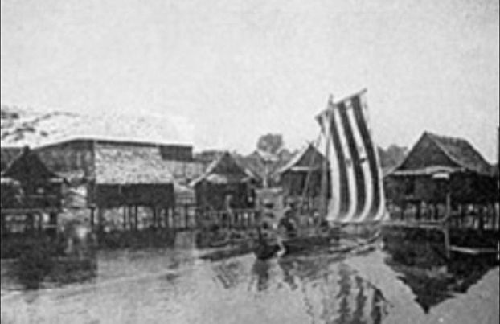
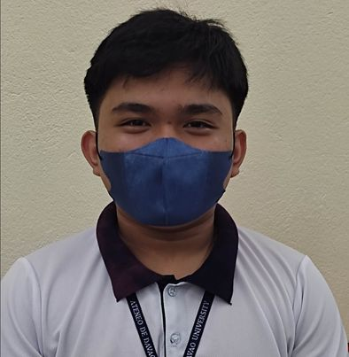

 About the Partner Institusion: Our institution is the Badjao community. Badjaos are also known as the “Sea Nomads” they are called Sea Nomads because they move with their vintas, vintas are like boats structured like houses, so everytime there are strong waves they are moved. Most of them can be found along the shores of Mindanao and Indonesia but as of today they are spread around the Philippines. They are known for their beautiful woven sails. Because of their lack of education their options for jobs are very limited, most of them earn money through fishing, selling pearls and pleading for money in the streets.
 Eiffel Lars Banzon is a Grade 9 student from the section of Bellarmine. He was one of the people who coded the websites and pages as our group wanted to raise awareness about the lack of daily necessities and simple needs of those in the Badajo community. We thought that coding a website that is eye catching would promote it wonderfully and efficiently. After visiting the community in person we saw how bad their situation is, the children were barely dressed and they looked as if they haven't taken a proper bath. Because of this we wanted to come up with a solution to help them as since their daily needs are very important.